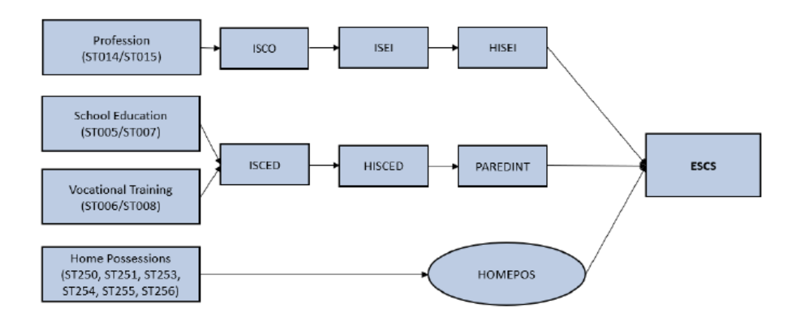
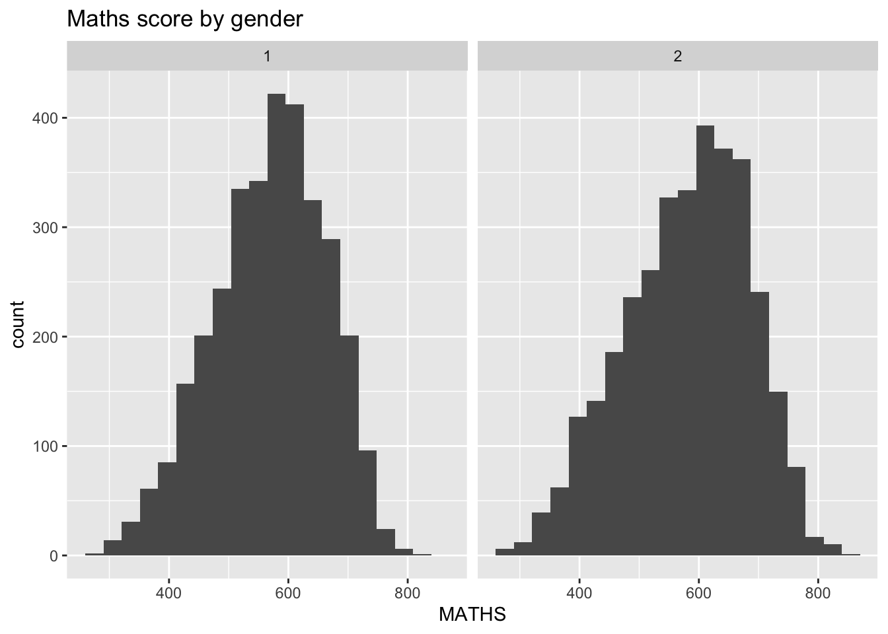

pacman::p_load(tidyverse,haven,ggdist, ggridges, ggthemes,
colorspace)Take-home Exercise 1
Background and Context
OECD education director Andreas Schleicher shared in a BBC article that “Singapore managed to achieve excellence without wide differences between children from wealthy and disadvantaged families.” (2016) Furthermore, several Singapore’s Minister for Education also started an “every school a good school” slogan. The general public, however, strongly believed that there are still disparities that exist, especially between the elite schools and neighborhood school, between students from families with higher socioeconomic status and those with relatively lower socioeconomic status and immigration and non-immigration families.
The 2022 Programme for International Student Assessment (PISA) data was released on December 5, 2022. PISA global education survey every three years to assess the education systems worldwide through testing 15 year old students in the subjects of mathematics, reading, and science.
Task
In this take-home exercise, you are required to use appropriate Exploratory Data Analysis (EDA) methods and ggplot2 functions to reveal:
the distribution of Singapore students’ performance in mathematics, reading, and science, and
the relationship between these performances with schools, gender and socioeconomic status of the students.
Limit your submission to not more than five EDA visualisation.
Requirements
The writeup should contain:
A reproducible description of the procedures used to prepare the analytical visualisation. Please refer to the senior submission in the reference section.
A write-up of not more than 150 words to describe and discuss the patterns revealed by each EDA visualisation prepared.
The Data
The PISA 2022 database contains the full set of responses from individual students, school principals and parents. There are a total of five data files and their contents are as follows:
Student questionnaire data file
School questionnaire data file
Teacher questionnaire data file
Cognitive item data file
Questionnaire timing data file
These data files are in SAS and SPSS formats. For the purpose of this assignment, you are required to use the Student questionnaire data file only.
Besides the data files, you will find a collection of complementary materials such as questionnaires, codebooks, compendia and the rescaled indices for trend analyses in this page too.
To learn more about PISA 2022 survey, you are encouraged to consult PISA 2022 Technical Report
Designing Tools
Process the data using tidyverse packages
Statistical graphics must be prepared using ggplot2 and its extensions.
Version 1
Loading R Packages
In this hands-on exercise, two R packages will be used. They are:
- tidyverse ; and
- haven
- ggdist, for visualising distribution and uncertainty
- ggridges, a ggplot2 extension specially designed for plotting ridgeline plots
- ggthemes
- colorspace
The code chunk used is as follows:
pacman::p_load() vs p_load()
Note: using pacman::p_load() instead of p_load() allows us to use the p_load libary in pacman package even if pacman is not installed.
Preparing SG dataset
The code chunk below uses read_sas() of haven to import PISA data into R envionment.
stu_qqq <- read_sas("data/cy08msp_stu_qqq.sas7bdat")
read_sas() vs read.sas()
read_sas() is better than read.sas() because read_sas() conforms to tibbler dataframe and retains the column descriptions (aka column labels) in addition to just the variable names
Interpreting the results: 613744 obs. of 1279 variables means there are 613744 observations, with 1279 columns in the data.
Use the data explorer to filter CNT by SGP to get only Singapore data. Code chunk below allows us to filter by CNY = SGP
stu_qqq_SG <- stu_qqq %>%
filter(CNT == "SGP")Code chunk below writes the filtered data into a .rds file
write_rds(stu_qqq_SG, "data/stu_qqq_SG.rds")Code chunk below allows us to read the data from the .rds file so that we do have have to re-process from the main dataset everytime.
stu_qqq_SG <- read_rds("data/stu_qqq_SG.rds")Fields of interest
The suggested computation of ESCS score (i.e. economic, social and cultural status) in PISA 2022 is shown below, whereby HISEI refers to highest parental occupation status, PAREDINT refers to highest education of parent in years, HOMEPOS refers to home possessions.

The fields of interest for socioeconomic status are:
- Profession: ST014/ST015 (Unfortunately not available in dataset)
- School education: ST005Q01JA (59) /ST007Q01JA (65)
- Vocational Training: ST006/ST008
- Home Possessions: ST250, ST251, ST253, ST254, ST255, ST256
Based on the PISA Data Analysis Manual, Fields of interest:
- Plausible value 1 to 10 in mathematics: PV1MATH, PV2MATH, …, PV10MATH
- Plausible value 1 to 10 in reading: PV1READ, PV2READ, … , PV10READ
- Plausible value 1 to 10 in science: PV1SCIE, PV2SCIE, …, PV10SCIE
the relationship between these performances with schools, gender and socioeconomic status of the students.
Fields of interest for gender: ST004D01T
immigrants and non-immigrants: fields 74,75,76, 77, 78, 79, 80, 81
- School ID: CNTSCHID
- Student ID: CNTSTUID
Code chunk below was used to view the field and field labels of the data
# Extract labels
variable_labels <- lapply(variable_names, function(var_name) {
attr(stu_qqq_SG[[var_name]], "label")
# #attr_labels <- labelled::labels(stu_qqq_SG[[var_name]])
# if (!is.null(attr_labels)) {
# return(attr_labels$label)
# } else {
# return(NULL)
#}
})
# Extract variable names
#variable_names <- names(stu_qqq_SG)
col_names <- as.list(colnames(stu_qqq_SG))Code chunk below was used to extract only a subset of the fields for analysis
col_name_regex_pv <- "PV\\d+READ|PV\\d+MATH|PV\\d+SCIE"
col_name_regex_gender <-"ST004D01T"
col_name_regex_school <- "CNTSCHID"
col_name_regex_student_id <- "CNTSTUID"
col_name_regex_profession <- "ST014*|ST015*"
col_name_regex_education <- "ST005*|ST007*"
col_name_regex_vocational_training <- "ST006|ST008"
col_name_regex_home_possessions <- "ST250|ST251|ST253|ST254|ST255|ST256"
# Extract columns starting with "PV*"
interested_cols_regex <- paste(col_name_regex_pv, col_name_regex_gender, col_name_regex_school,col_name_regex_student_id,col_name_regex_profession,col_name_regex_education,col_name_regex_vocational_training,col_name_regex_home_possessions, sep = "|")
#interested_cols_regex <- paste("^(",interested_cols_regex,")")
columns_to_extract <- grep(interested_cols_regex, colnames(stu_qqq_SG), value = TRUE)
print(columns_to_extract) [1] "CNTSCHID" "CNTSTUID" "ST001D01T" "ST003D02T" "ST003D03T"
[6] "ST004D01T" "ST250Q01JA" "ST250Q02JA" "ST250Q03JA" "ST250Q04JA"
[11] "ST250Q05JA" "ST250D06JA" "ST250D07JA" "ST251Q01JA" "ST251Q02JA"
[16] "ST251Q03JA" "ST251Q04JA" "ST251Q06JA" "ST251Q07JA" "ST251D08JA"
[21] "ST251D09JA" "ST253Q01JA" "ST254Q01JA" "ST254Q02JA" "ST254Q03JA"
[26] "ST254Q04JA" "ST254Q05JA" "ST254Q06JA" "ST255Q01JA" "ST256Q01JA"
[31] "ST256Q02JA" "ST256Q03JA" "ST256Q06JA" "ST256Q07JA" "ST256Q08JA"
[36] "ST256Q09JA" "ST256Q10JA" "ST005Q01JA" "ST006Q01JA" "ST006Q02JA"
[41] "ST006Q03JA" "ST006Q04JA" "ST006Q05JA" "ST007Q01JA" "ST008Q01JA"
[46] "ST008Q02JA" "ST008Q03JA" "ST008Q04JA" "ST008Q05JA" "ST019AQ01T"
[51] "ST019BQ01T" "ST019CQ01T" "ST016Q01NA" "PV1MATH" "PV2MATH"
[56] "PV3MATH" "PV4MATH" "PV5MATH" "PV6MATH" "PV7MATH"
[61] "PV8MATH" "PV9MATH" "PV10MATH" "PV1READ" "PV2READ"
[66] "PV3READ" "PV4READ" "PV5READ" "PV6READ" "PV7READ"
[71] "PV8READ" "PV9READ" "PV10READ" "PV1SCIE" "PV2SCIE"
[76] "PV3SCIE" "PV4SCIE" "PV5SCIE" "PV6SCIE" "PV7SCIE"
[81] "PV8SCIE" "PV9SCIE" "PV10SCIE" # Subset the data frame to include only the selected columns
subset_fields_stu_qqq_SG <- stu_qqq_SG[, columns_to_extract, drop = FALSE]
# Print the subsetted data frame
print(subset_fields_stu_qqq_SG)# A tibble: 6,606 × 83
CNTSCHID CNTSTUID ST001D01T ST003D02T ST003D03T ST004D01T ST250Q01JA
<dbl> <dbl> <dbl> <dbl> <dbl> <dbl> <dbl>
1 70200052 70200001 10 10 2006 1 2
2 70200134 70200002 10 6 2006 2 1
3 70200112 70200003 10 7 2006 2 1
4 70200004 70200004 10 2 2006 2 2
5 70200152 70200005 10 9 2006 1 2
6 70200043 70200006 10 9 2006 1 2
7 70200049 70200007 10 3 2006 2 1
8 70200107 70200008 10 4 2006 2 1
9 70200012 70200009 10 8 2006 1 2
10 70200061 70200010 10 6 2006 2 2
# ℹ 6,596 more rows
# ℹ 76 more variables: ST250Q02JA <dbl>, ST250Q03JA <dbl>, ST250Q04JA <dbl>,
# ST250Q05JA <dbl>, ST250D06JA <chr>, ST250D07JA <chr>, ST251Q01JA <dbl>,
# ST251Q02JA <dbl>, ST251Q03JA <dbl>, ST251Q04JA <dbl>, ST251Q06JA <dbl>,
# ST251Q07JA <dbl>, ST251D08JA <chr>, ST251D09JA <chr>, ST253Q01JA <dbl>,
# ST254Q01JA <dbl>, ST254Q02JA <dbl>, ST254Q03JA <dbl>, ST254Q04JA <dbl>,
# ST254Q05JA <dbl>, ST254Q06JA <dbl>, ST255Q01JA <dbl>, ST256Q01JA <dbl>, …#obtain the average PVs
math_pv_cols <- grep("^PV\\d+MATH$", colnames(subset_fields_stu_qqq_SG), value = TRUE)
#print(math_pv_cols)
subset_fields_stu_qqq_SG$MATHS <- rowMeans(subset_fields_stu_qqq_SG[, math_pv_cols, drop = FALSE], na.rm = TRUE)
#READ
read_pv_cols <- grep("^PV\\d+READ$", colnames(subset_fields_stu_qqq_SG), value = TRUE)
# print(read_pv_cols)
subset_fields_stu_qqq_SG$READ <- rowMeans(subset_fields_stu_qqq_SG[, read_pv_cols, drop = FALSE], na.rm = TRUE)
#SCIENCE
science_pv_cols <- grep("^PV\\d+SCIE$", colnames(subset_fields_stu_qqq_SG), value = TRUE)
# print(science_pv_cols)
subset_fields_stu_qqq_SG$SCIENCE <- rowMeans(subset_fields_stu_qqq_SG[, science_pv_cols, drop = FALSE], na.rm = TRUE)
# Print the updated data frame
# print(subset_fields_stu_qqq_SG)Code chunk to display first 5 rows using head()
head(stu_qqq_SG,5) # A tibble: 5 × 1,279
CNT CNTRYID CNTSCHID CNTSTUID CYC NatCen STRATUM SUBNATIO REGION OECD
<chr> <dbl> <dbl> <dbl> <chr> <chr> <chr> <chr> <dbl> <dbl>
1 SGP 702 70200052 70200001 08MS 070200 SGP01 7020000 70200 0
2 SGP 702 70200134 70200002 08MS 070200 SGP01 7020000 70200 0
3 SGP 702 70200112 70200003 08MS 070200 SGP01 7020000 70200 0
4 SGP 702 70200004 70200004 08MS 070200 SGP01 7020000 70200 0
5 SGP 702 70200152 70200005 08MS 070200 SGP01 7020000 70200 0
# ℹ 1,269 more variables: ADMINMODE <dbl>, LANGTEST_QQQ <dbl>,
# LANGTEST_COG <dbl>, LANGTEST_PAQ <dbl>, Option_CT <dbl>, Option_FL <dbl>,
# Option_ICTQ <dbl>, Option_WBQ <dbl>, Option_PQ <dbl>, Option_TQ <dbl>,
# Option_UH <dbl>, BOOKID <dbl>, ST001D01T <dbl>, ST003D02T <dbl>,
# ST003D03T <dbl>, ST004D01T <dbl>, ST250Q01JA <dbl>, ST250Q02JA <dbl>,
# ST250Q03JA <dbl>, ST250Q04JA <dbl>, ST250Q05JA <dbl>, ST250D06JA <chr>,
# ST250D07JA <chr>, ST251Q01JA <dbl>, ST251Q02JA <dbl>, ST251Q03JA <dbl>, …EDA Visualization
#plot PV scores against gender
# ggplot(data=exam_data,
# aes(x= MATHS)) +
# geom_histogram(bins=20) +
# facet_wrap(~ CLASS)
eda_data <- subset_fields_stu_qqq_SG
ggplot(data=eda_data,
aes(x = MATHS)) +
geom_histogram(bins=20) +
facet_wrap(~ST004D01T) +
ggtitle("Maths score by gender")
# ) +
# geom_density_ridges(
# y = ST004D01T,
# scale = 3,
# rel_min_height = 0.01,
# bandwidth = 3.4,
# fill = lighten("#7097BB", .3),
# color = "white"
# ) +
# scale_x_discrete(
# name = "Maths grades",
# expand = c(0, 0)
# ) +
# scale_y_discrete(name = NULL, expand = expansion(add = c(0.2, 2.6))) +
# theme_ridges()